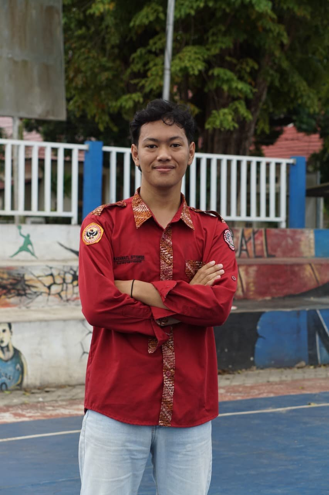
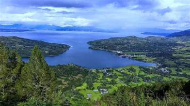
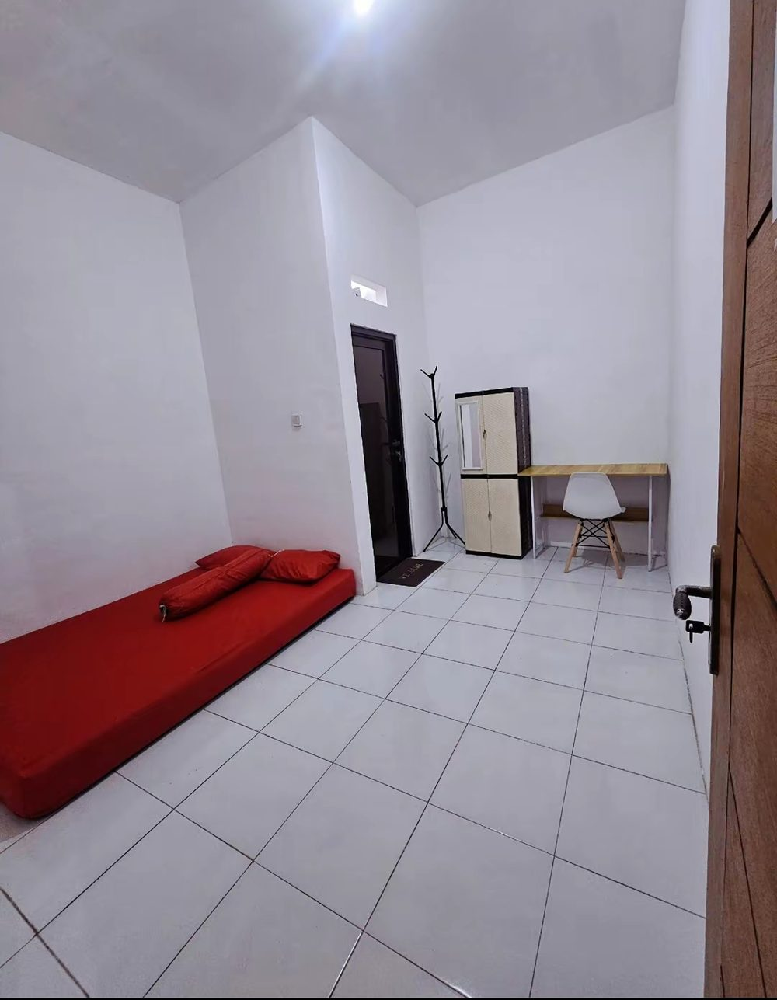
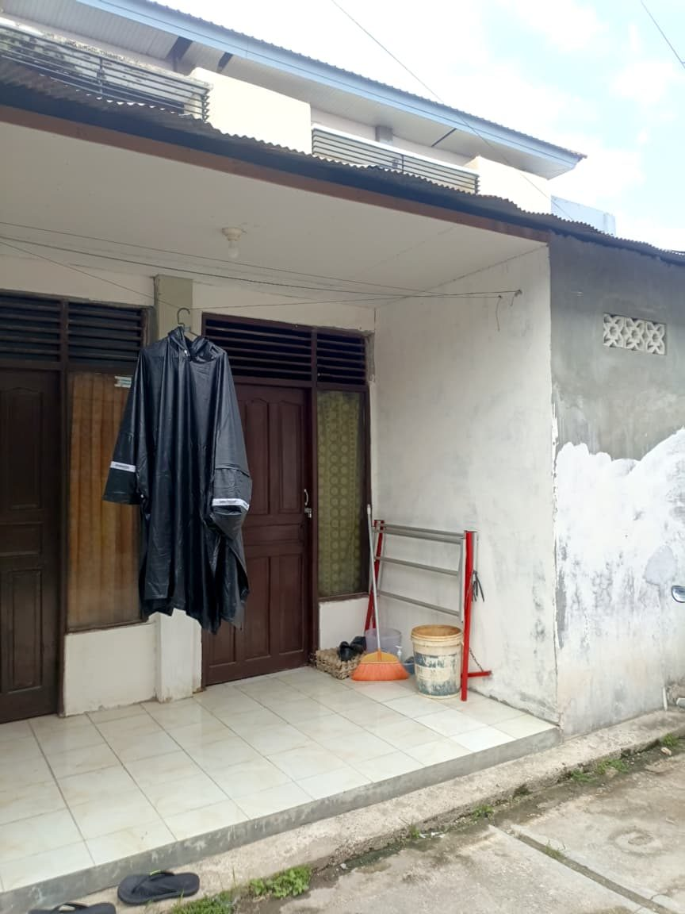
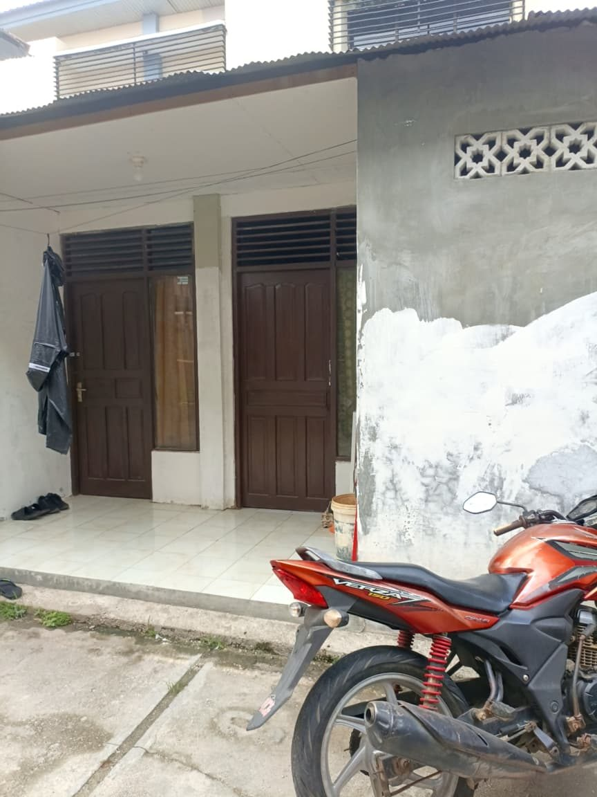

Halo, saya Nael
Natanael Sitorus
Mahasiswa Sosial Ekonomi Perikanan di Universitas Lambung Mangkurat, berasal dari Sumatera Utara. Di luar perkuliahan, saya gemar bermain bola voli.

// Biodata Diri
- Nama Lengkap
- Natanael Sitorus
- Nama Panggilan
- Nael
- Daerah Asal
- Sumatera Utara

- Hobi
- Bola Voli
- Pendidikan
- Mahasiswa Program Studi Sosial Ekonomi Perikanan, Universitas Lambung Mangkurat (ULM)
- Alamat
- Jl. Dahlina Raya
// Tempat Tinggal / Kost
Dokumentasi foto dan video tempat tinggal selama kuliah. Klik foto untuk memperbesar.



